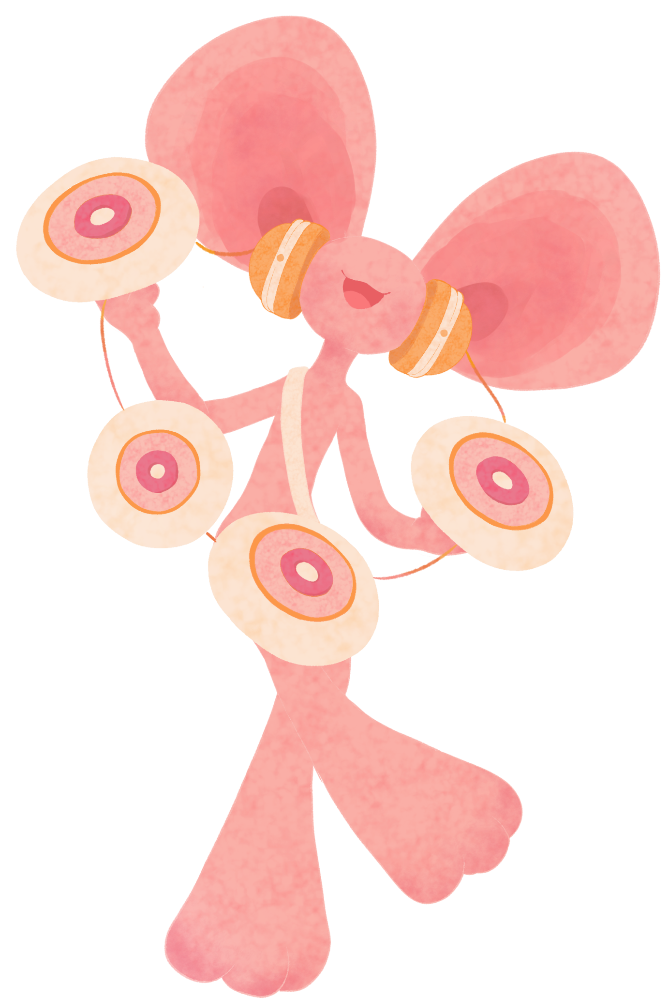
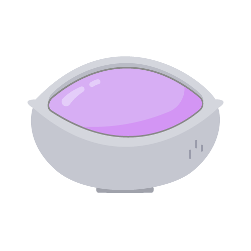

CHIPPY
〜 土を掘る人 〜
地底で家を作るために、土を除去する仕事をしているよ。 力持ちでまっすぐな性格。
職業：土吸収員
住んでいる地層：上層
地底に潜っています
あなたはどうやって地底生活を始める？
物語を読む地底人たちに呼んでもらう名前を教えてね！
気になる地底人を一人選んで暮らしを見てみよう！
暮らしをのぞき終わると、友情ポイントがもらえるよ。
〜 土を掘る人 〜
地底で家を作るために、土を除去する仕事をしているよ。 力持ちでまっすぐな性格。
職業：土吸収員
住んでいる地層：上層

〜 音を集める人 〜
地底に響くいろんな音を集めているよ。 歌うことや音楽が大好き。
職業：音の採集家
住んでいる地層：中層
〜 植物のお医者さん 〜
地底の植物たちの健康を守るお医者さん。 植物と話せるよ。
職業：植物の医者
住んでいる地層：深層

〜 建築家 〜
地底に住むみんなの家を建てているよ。 土を叩くリズムがずれると、地層が崩れちゃう。
職業：建築家
住んでいる地層：？？？
CHIPPY
CHIPPY
友情ポイントを25%もらったよ。
SIMPY
1番目から、聴いた順番にならべてね。
SIMPY
友情ポイントを25%もらったよ。

NASUPY
NASUPY
友情ポイントを25%もらったよ。
COMBO 0
0 / 8
0点
HITOPY
HITOPY
友情ポイントを25%もらったよ。
SIMPY
落ちてくる音符が光る輪に重なったらクリック。変な音は押さないで。点数で競おう。
COMBO 0
0 / 8
0点
「家を選ぶ」で、お気に入りの家をひとつ選んでね。
撮影ごほうび
今日の一枚を撮った記念に、星のしるしをプレゼント。
地底生活の続きをはじめよう！